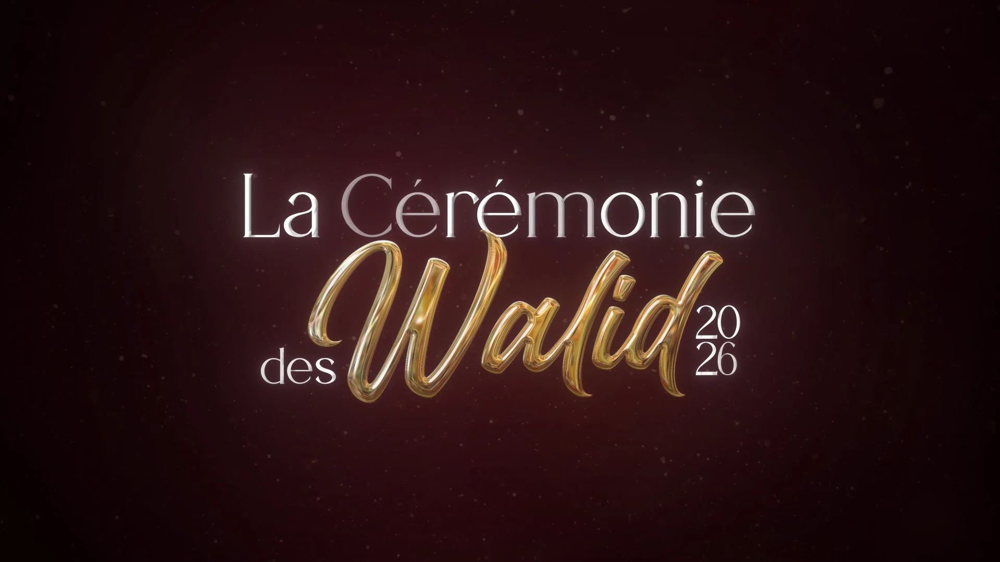

La Cérémonie des Walid
Une cérémonie créée par les étudiants,
pour les étudiants.
L'auditorium était plein.
Quand tout
repose sur
le direct.
La Cérémonie des Walid, c'est une remise de prix née en 2022 au sein du BUT MMI de Laval. Inspirée de Walid, la mascotte du BDE, elle met en lumière les projets les plus remarquables des étudiants : vidéos, sites web, campagnes de communication, portfolios. Année après année, elle est devenue la vitrine de l'IUT de Laval.
Pour cette 4ᵉ édition, le défi était clair : ouvrir l'événement aux quatre départements de l'IUT — MMI, INFO, TC, GB — sans perdre l'identité de ce qui fait la Cérémonie. Le 27 janvier 2026, l'auditorium du Quarante à Laval était plein. Chaque détail avait été pensé pour que le live se déroule sans accroc.
Mon rôle
- Chef de production
- Coordination équipe technique
- Développement du site web
Outils
- ATEM Mini / Blackmagic
- WordPress (code custom)
- Figma
Livrables
- Production live complète
- Site web (dépôt, vote, billetterie)
- Direction technique de la soirée
Coordonner
sans improviser.
En tant que chef de production, j'ai coordonné l'ensemble de l'équipe technique du Studio. Planning de diffusion, répartition des rôles, gestion du matériel — tout devait être calé en amont pour que le soir J, chaque personne sache exactement quoi faire. Le live ne pardonne pas l'approximation.


Un site,
trois fonctions.
J'ai conçu et développé le site ceremoniedeswalid.fr sur WordPress, avec un design soigné intégrant des animations GSAP pour donner envie aux étudiants de participer. Au-delà du visuel, j'ai développé du code custom pour mettre en place les systèmes de dépôt de projets, de vote par catégorie et la gestion des comptes utilisateurs. Un outil complet, pensé pour l'expérience de bout en bout.